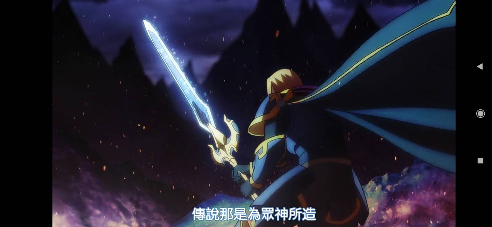
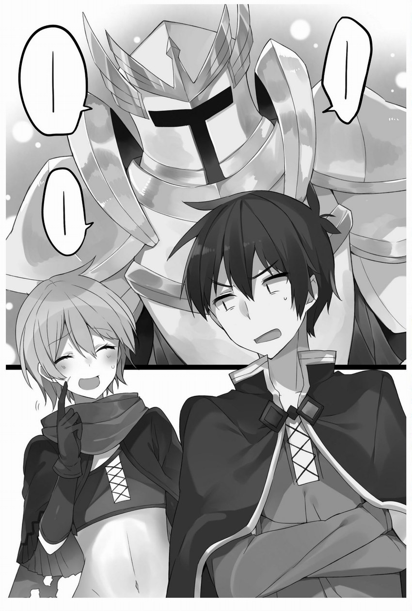
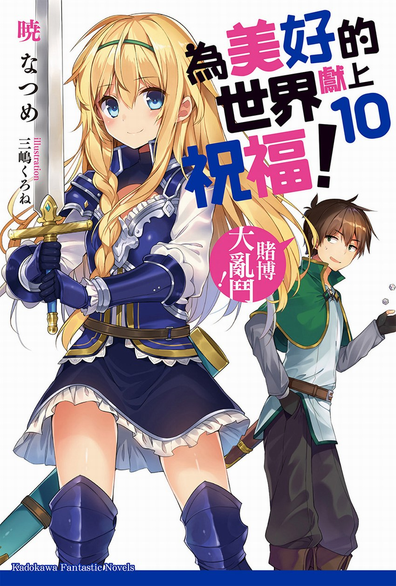

神器
由女神給予轉生來的異世界人，每人一項神器，異世界人一旦死亡，則由女神負責回收。
魔劍格拉墨（魔剣グラム）
由御劍響夜持有，曾被佐藤和真奪走後賣掉。只有御劍響夜可以發揮效果，其他人持有就是一般的劍。
換身項鍊（「他者と身体を入れ替える」神器）
阿爾普達將其送給王國第一王子，後由愛麗絲公主配戴。原持有人可永久交換，一般人會變成有時間限制的交換，但善加運用的話甚至可以得到永恆的生命。要是自己的身體開始衰老，只要和年輕又健康的人交換身體，再殺掉對方就可以了。
魔物使役神器（「ランダムにモンスターを召喚する」神器）
阿爾達普持有，外型是個圓型的石頭，是能夠隨機召喚魔物並使喚它們的外掛道具，而且不需要付出任何報酬或代價。但是一般人使用此神器，在召喚出怪物之後想隨意控制時會變成需要報酬或代價。阿爾達普消失後被艾莉絲女神回收並封印，之後藏在多頭水蛇的棲息的湖底。多頭水蛇被消滅掉之後為恢復環境，公會委託阿克婭去淨化水質，阿克婭一邊淨化水質一邊撿石頭要拿來賣，結果就把神器給撿走了。艾莉絲女神發現該湖區附近已經有人開始居住，便要前往湖底回收神器卻找不到，以為又被拿來召喚怪物。
聖鎧埃癸斯（聖鎧アイギス）
貴族安岱因收藏。這個世界上最堅硬的，爲穿戴之人帶來勝利的神器。是個會說話，會自主行動，而且很好色的鎧甲。各種魔法攻擊與技能均對其無效，且無法分解，要穿著聖鎧需念咒文才可穿著。聖鎧與聖盾成套，但目前只找到聖鎧。
原本艾莉絲女神要把埃癸斯交給御劍響夜，但埃癸斯嫌御劍響夜只是靠一把魔劍打天下，沒甚麼實力，所以離家出走跑到紅魔之里性騷擾酒館女店員。族長第三關試練時協助芸芸通過試練。
什麼咖哩棒（なんとかカリバー）
愛麗絲公主持有的聖劍，但是沒有把劍的名字記清楚。
持有者能免疫異常狀態和詛咒的神器。愛麗絲覺得劍鞘很美麗而向父王撒嬌後獲贈。
佐藤和真在愛麗絲公主使用此劍聽聞什麼咖哩棒之名時，斷定此劍就是在地球家喻戶曉的超有名聖劍－王者之劍Excalibur（聖剣エクスカリバー），在想起過去惠惠曾惡作劇用筆在和真的小腹上把和真的「重要部位」命名為聖劍Excalibur這段黑暗記憶之同時，並有「這種東西不交給前線奮戰的勇者，而是公主殿下真的沒問題嗎？」之感嘆。